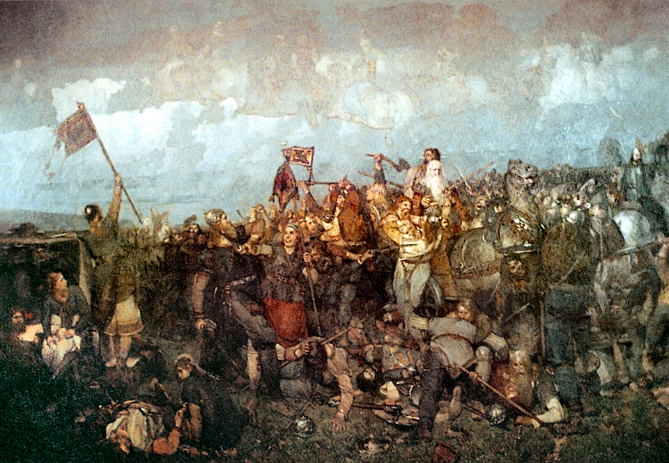

Battle of Brávellir är en spännande äventyrsfilm som blandar historia och fantasi.
Filmen följer Siv, en ung person som bor i Norrköping på 1960-talet, där hon lever ett tråkigt och ensamt liv.
En dag hittar hon en mystisk runsten i skogen, som visar sig ha magiska krafter. När hon rör vid stenen transporteras hon plötsligt till 700-talet, där ett stort slag mellan svear och daner ska utkämpas på Bråvallafältet.

Hon blir indragen i konflikten och måste välja sida mellan de två kungarna Sigurd Ring och Harald Hildetand.
Hon får också möta legendariska krigare, gudomliga väsen och farliga fiender.
Filmen är baserad på en gammal nordisk saga, som skildrar slaget vid Bråvalla som ett avgörande ögonblick i Skandinaviens historia.
Filmen är en gripande berättelse om mod, vänskap och identitet, som utmanar gränserna mellan verklighet och fantasi.
I samarbete med Norrköpings kommun anordnar Norrkopia pictures en utställning på Norrköpings historiska museum. Här kan du se de olika kostymer
och originalplagg som inspirerat karaktärernas utseende i filmen. Från 700-talets vikingar till 1960-talets modevärld.
Utställningen öppnar den 26e juli i samband med premiäreventet som anordnas på museet.
Nedan kan ni se några bilder från utställningen.